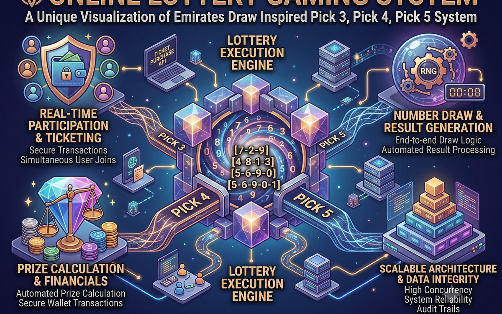

1. Executive Summary & Platform Architecture
Lottery engines require absolute audit compliance, data integrity, and strict scheduling reliability. Unlike casual games where a missed event can be retried, a delayed or duplicate lottery draw can cause legal liabilities.
I engineered the automated draw scheduling, ticket serialization, and prize distribution engines for Jackpot Aruba, enabling thousands of active ticket purchases and instantaneous draw resolution.
2. The Draw Execution & Ticket Validation Flow
- Ticket Serialization: Every ticket receives a cryptographic hash upon purchase, binding the selected numbers, user wallet ID, timestamp, and target draw ID to prevent counterfeit claims.
- Distributed Lock Safeguard: When the scheduled draw time triggers, workers compete for a Redis distributed lock. Only the victorious worker can trigger the draw sequence, preventing split-brain double draws.
- Parallel Prize Evaluation: Millions of purchased combinations are evaluated against the winning draw numbers using batch bitmask operations in memory, distributing fixed and progressive jackpot tiers into player accounts within seconds.
Building Regulated Lottery or Betting Systems?
Whether you need automated draw workers, ticket auditing, or high-concurrency transaction reconciliation, let's connect.
Contact Chetan Ladumor